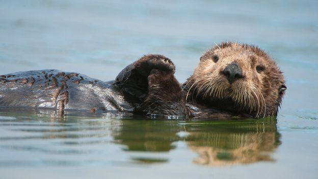

Sea Otters

Sea otters sea otters have a luxurious coat that is waterproof that help them against the cold water and they inhabit almost led to its extinction hunters killed and traded there fur and due to that they almost got wiped out with only 2000 of an estimated 300,000 left That year, an international ban on commercial hunting was enacted. Though that ban, along with management and conservation measures taken in the wake of the 1972 Marine Mammal Protection Act, have helped populations recover to perhaps a third of their earlier numbers they are highly vulnerable to both natural phenomena such as killer whale predation and to anthropogenic factors such as oil spills. FACKS about sea otters
The sea otter can live its entire life without leaving the water
The sea otter is one of the few mammal species on Earth to use a tool to help it hunt and feed. It wedges a rock between its chest and the “armpit” of a foreleg and pounds shells against it to open them up. The sea otter also hammers rocks against strongly gripping abalone shells to pry them off of rocks and feed on their tasty insides
If a sea otter’s fur becomes dirty, it has trouble absorbing the air needed to keep it warm. Therefore, sea otters are obsessive about keeping their fur clean, and groom themselves practically non-stop when they’re not eating or sleeping. Oil spills, therefore, can affect sea otters perhaps more so than any other marine mammal; oil coating their fur can lead to death by hypothermia.
Page Break
Like polar bears in the Arctic, sea otters are considered keystone species in their ecosystems, because they affect great influence on their environments. For instance, they plentifully eat sea urchins, which eat kelp in great abundance. When the sea urchins’ populations are controlled by sea otters, vital kelp forests can flourish.